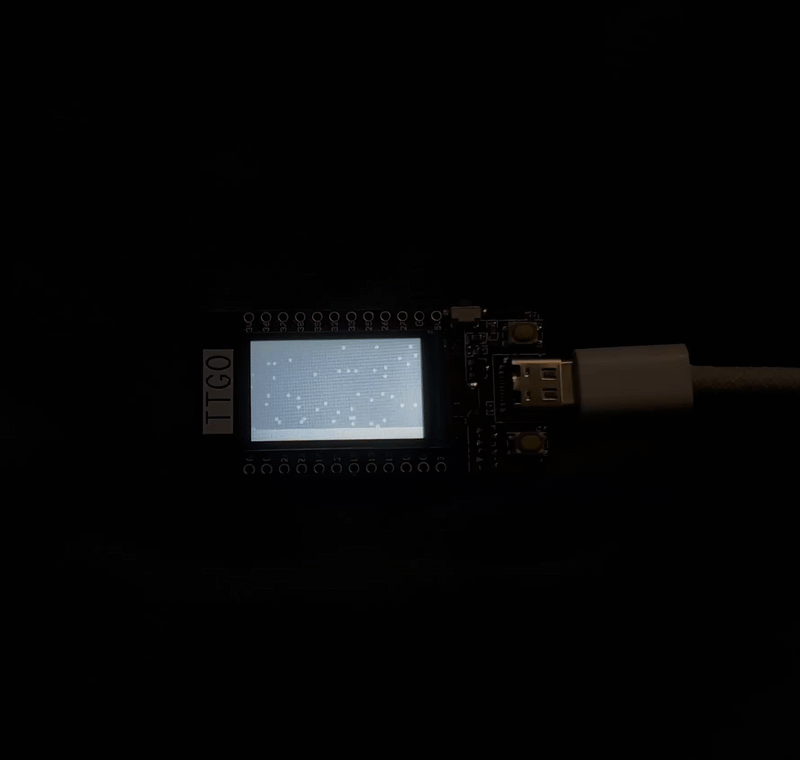
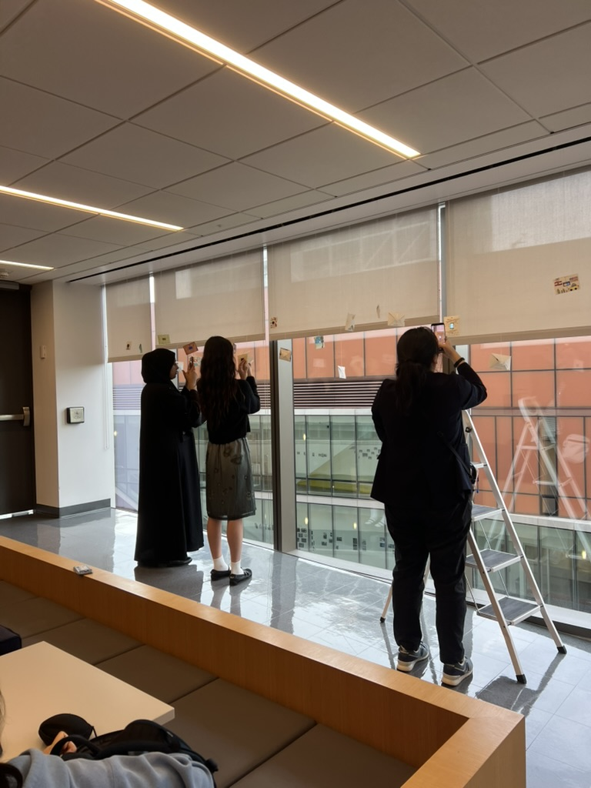

Rain or Snow
Summary
This project explores changing weather by animating transitions between falling rain and snow on an ESP32 display. The raindrops are represented as rectangles that move downward quickly by incrementing their y-position by 4 pixels per frame. In contrast, the snowflakes are represented as circles that drift downward at a slower pace, moving by only 1 pixel per frame, with small side-to-side adjustments along the x-axis to simulate a floating effect. To keep the visual running in an infinite loop, particles reset to random coordinates at the top of the display as soon as they reach the bottom, ensuring that approximately 50 unique particles remain active on screen at all times. Additionally, rather than creating a digital scene of a window frame over the animations, the piece incorporates mixed media by using physical envelopes from our art installation to frame the display and complete the window illusion.
Inspiration & Motivations
This art piece was inspired by the changing seasons, specifically, the image of sitting by your window and seeing the leaves change color and fall. My original sketches included a tree transitioning between blooming flowers, vibrant orange and red leaves, down to bare branches in the cold winter. However, this was a bit too ambitious as a first project on the ESP32 and required a lot of math. Thus, I decided to explore changing weather, more specifically rain and snow, as these were a lot easier to visualize and replicate on an ESP32 while maintaining a similar theme of transitioning between states.
Technology & Hardware
For this project, I used the LILYGO T-Display (ESP32) board. Setting up my laptop and the ESP32 was a bit tricky at first. Getting all the right drivers and settings lined up took a little troubleshooting, but once everything was set up, it was really easy to just upload things directly to the ESP32 and see cool art and designs. I used the Arduino IDE to write and upload the code, along with the TFT_eSPI library to draw the shapes and handle the screen graphics. The logic itself was coded in C++, using basic math and random number generators to control the particle movement for the rain and snow animations. I used a USB-C cable plugged into my laptop while developmenting and uploading code; however, I powered the ESP32 using a small battery for the final art installation at Milstein.
Images & Videos

Installation at the Milstein Center
It was cool and inspiring to see everyone else's projects during the showcase and instillation. Some people created super detailed, elaborate artistic scenes, while others went with simpler drawings but built really complex, dynamic elements. Overall, everyone was incredibly creative , which inspired me to think about all the cool things I could do in the future using an ESP32.

Design Recommendations & Next Steps
Next time, I’d like to push myself to try creating the changing seasons art piece, possibly using other libraries as well as adding an interactive element with the ESP32. While my project isn’t exactly a GIF, there is not a lot of variation in the images it creates, so adding an interactive element will add complexity and make it more intriguing to watch. Additionally, I could experiment with expanding the design itself by playing around with new variables. This could include adding new weather scenes, such as sunny, lightning, or windy conditions, and changing parameters like speed, wind angle, and chnaging colors to make the art more interesting.